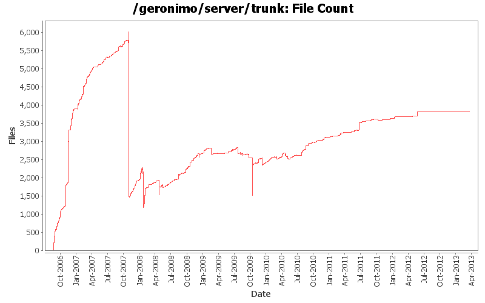
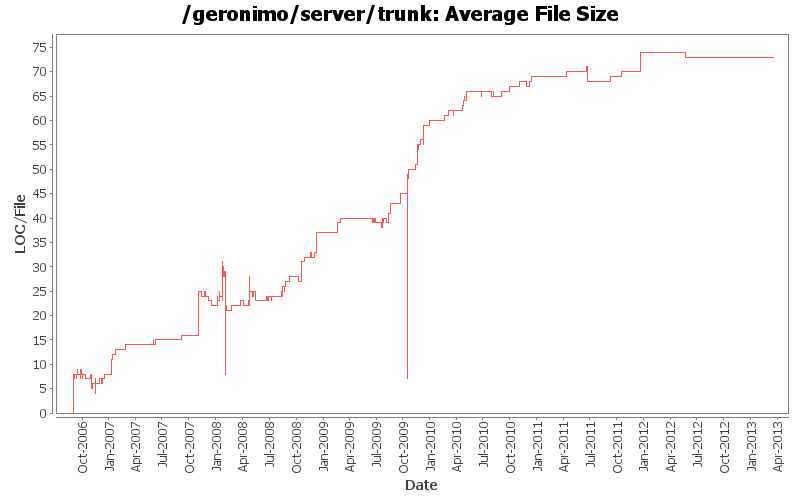

File Sizes and File Counts
- Total Files:
- 5125
- Average File Size:
- 113.4 lines
- Average Revisions Per File:
- 5.8


File Types
| Type |
Files |
LOC |
LOC per file |
| Totals |
5125 (100.0%) |
580978 (100.0%) |
113.3 |
| *.java |
2633 (51.4%) |
362553 (62.4%) |
137.6 |
| *.xml |
1398 (27.3%) |
125769 (21.6%) |
89.9 |
| *.jsp |
279 (5.4%) |
28872 (5.0%) |
103.4 |
| *.properties |
115 (2.2%) |
12730 (2.2%) |
110.6 |
| *.xsd |
31 (0.6%) |
8304 (1.4%) |
267.8 |
| *.txt |
43 (0.8%) |
3581 (0.6%) |
83.2 |
| *.tld |
24 (0.5%) |
3254 (0.6%) |
135.5 |
| *.png |
75 (1.5%) |
2280 (0.4%) |
30.4 |
| *.js |
176 (3.4%) |
1814 (0.3%) |
10.3 |
| *.wsdl |
16 (0.3%) |
1669 (0.3%) |
104.3 |
| Others |
303 (5.9%) |
30152 (5.2%) |
99.5 |
| Non-Code Files |
32 (0.6%) |
0 (0.0%) |
0.0 |
Largest Files
| File |
Lines of Code |
 LICENSE LICENSE |
4516 |
| framework/configs/karaf-framework/src/main/distribution/text/LICENSE |
4515 |
| pom.xml |
2722 |
| framework/buildsupport/car-maven-plugin/src/main/resources/META-INF/maven/plugin.xml |
2529 |
| framework/features/framework/src/main/distribution/text/LICENSE |
2291 |
| framework/features/framework/src/main/resources/resources/LICENSE |
2291 |
| framework/modules/geronimo-plugin/src/main/java/org/apache/geronimo/system/plugin/PluginInstallerGBean.java |
2100 |
| plugins/system-database/sysdb-portlets/src/main/java/org/apache/geronimo/console/databasemanager/wizard/DatabasePoolPortlet.java |
1790 |
| framework/modules/geronimo-kernel/src/main/java/org/apache/geronimo/kernel/config/SimpleConfigurationManager.java |
1636 |
| plugins/openejb/geronimo-openejb-builder/src/main/java/org/apache/geronimo/openejb/deployment/EjbModuleBuilder.java |
1580 |
| plugins/connector-1_6/geronimo-connector-builder-1_6/src/main/java/org/apache/geronimo/connector/deployment/ConnectorModuleBuilder.java |
1391 |
| framework/modules/geronimo-kernel/src/main/java/org/apache/geronimo/gbean/runtime/GBeanInstance.java |
1337 |
| plugins/j2ee/geronimo-j2ee-builder/src/main/java/org/apache/geronimo/j2ee/deployment/EARConfigBuilder.java |
1286 |
| plugins/console/console-base-portlets/src/main/java/org/apache/geronimo/console/bundlemanager/BundleManagerPortlet.java |
1275 |
| plugins/console/console-portal-driver/src/main/webapp/dojo/dojox/gfx/resources/Gillius.svg |
1272 |
| plugins/monitoring/mconsole-war/src/main/java/org/apache/geronimo/monitoring/console/MonitoringPortlet.java |
1247 |
| plugins/tomcat/tomcat7/src/main/filtered-resources/tomcat-base/conf/web.xml |
1221 |
| plugins/console/plugin-portlets/src/main/java/org/apache/geronimo/console/securitymanager/realm/SecurityRealmPortlet.java |
1189 |
| plugins/j2ee/geronimo-j2ee-schema/src/main/xsd/geronimo-naming-1.2.xsd |
1187 |
| framework/buildsupport/car-maven-plugin/src/main/java/org/apache/geronimo/mavenplugins/car/AbstractCarMojo.java |
1152 |
Files With Most Revisions
| File |
Revisions |
| pom.xml |
936 |
| testsuite/pom.xml |
118 |
| plugins/pom.xml |
102 |
| plugins/openejb/geronimo-openejb-builder/src/main/java/org/apache/geronimo/openejb/deployment/EjbModuleBuilder.java |
92 |
| plugins/openejb/openejb/src/main/history/dependencies.xml |
81 |
| framework/configs/karaf-framework/pom.xml |
80 |
| plugins/client/client/src/main/history/dependencies.xml |
76 |
| framework/pom.xml |
75 |
 configs/pom.xml configs/pom.xml |
69 |
| plugins/tomcat/geronimo-tomcat7-builder/src/main/java/org/apache/geronimo/tomcat/deployment/TomcatModuleBuilder.java |
63 |
| modules/geronimo-openejb-builder/src/main/java/org/apache/geronimo/openejb/deployment/EjbModuleBuilder.java |
61 |
| assemblies/geronimo-boilerplate-minimal/pom.xml |
60 |
| modules/geronimo-axis2/src/main/java/org/apache/geronimo/axis2/Axis2WebServiceContainer.java |
59 |
| plugins/axis2/axis2/src/main/history/dependencies.xml |
59 |
| plugins/j2ee/geronimo-web-2.5-builder/src/main/java/org/apache/geronimo/web25/deployment/AbstractWebModuleBuilder.java |
58 |
| plugins/j2ee/geronimo-j2ee-builder/src/main/java/org/apache/geronimo/j2ee/deployment/EARConfigBuilder.java |
58 |
| framework/configs/karaf-framework/src/main/filtered-resources/etc/startup.properties |
58 |
| framework/configs/karaf-framework/src/main/filtered-resources/etc/config.properties |
55 |
| plugins/tomcat/geronimo-tomcat7/src/main/java/org/apache/geronimo/tomcat/GeronimoStandardContext.java |
51 |
| framework/configs/karaf-framework/src/main/history/dependencies.xml |
51 |